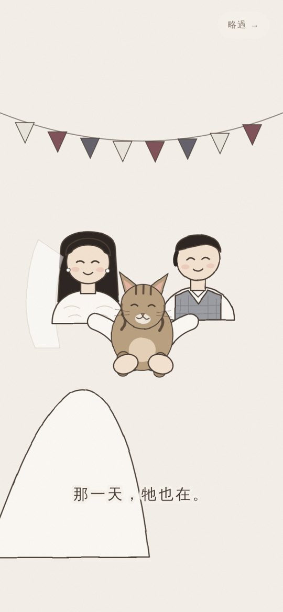

<title>黑醬開場比較</title>
<meta name="claude:viewport-fit-sides" content="cover">
<link rel="stylesheet" href="https://fonts.googleapis.com/css2?family=LXGW+WenKai+TC&display=swap">
<style>
/* 版面：和黑醬網站同一張紙的顏色；兩版並排（手機上下排），二版在前 */
:root{
  --paper:#f4f0e9; --card:#fbf8f3; --ink:#3f342c; --warm:#886955; --quiet:#8b7d71; --line:#dcd2c6; --night:#15141c;
  --serif:"LXGW WenKai TC","Songti TC","Noto Serif TC",serif; --body:"PingFang TC","Noto Sans TC","Microsoft JhengHei",sans-serif;
}
@media (prefers-color-scheme:dark){:root:not([data-theme="light"]){--paper:#1c1a1f;--card:#26232a;--ink:#ece4d8;--warm:#d2b392;--quiet:#a69a8d;--line:#3a3540;color-scheme:dark}}
:root[data-theme="dark"]{--paper:#1c1a1f;--card:#26232a;--ink:#ece4d8;--warm:#d2b392;--quiet:#a69a8d;--line:#3a3540;color-scheme:dark}
body{background:var(--paper);color:var(--ink);font:15px/1.75 var(--body);-webkit-font-smoothing:antialiased}
main{max-width:980px;margin:0 auto;padding-block:40px 56px;padding-left:max(16px,env(safe-area-inset-left,0px));padding-right:max(16px,env(safe-area-inset-right,0px))}
header{display:flex;flex-direction:column;gap:6px;margin-bottom:28px}
h1{font:400 clamp(28px,4.4vw,40px)/1.4 var(--serif);letter-spacing:.08em;margin:0;text-wrap:balance}
header p{margin:0;color:var(--quiet);font-size:14px;letter-spacing:.04em;max-width:36em}
.grid{display:grid;grid-template-columns:1.25fr 1fr;gap:28px;align-items:start}
@media (max-width:720px){.grid{grid-template-columns:1fr}}
article{min-width:0;display:flex;flex-direction:column;gap:14px}
.frame{position:relative;aspect-ratio:9/16;width:min(100%,46vh,520px);max-width:100%;border-radius:18px;overflow:hidden;background:var(--night);box-shadow:0 1px 0 rgba(255,255,255,.4) inset,0 18px 40px -18px rgba(40,25,15,.45)}
.frame video,.frame img{width:100%;height:100%;object-fit:cover;display:block}
.v1 .frame{width:min(100%,40vh,420px)}
.play{position:absolute;inset:auto 0 0 0;display:flex;justify-content:center;padding:22px;background:linear-gradient(transparent,rgba(20,16,12,.45))}
.play button{font:400 17px var(--serif);letter-spacing:.12em;color:#3f342c;background:#fbf8f3;border:0;border-radius:100px;padding:12px 26px;cursor:pointer}
.play button:focus-visible,.tools a:focus-visible{outline:2px solid var(--warm);outline-offset:4px}
.label{display:flex;align-items:baseline;gap:12px;flex-wrap:wrap}
.label h2{font:400 22px/1.4 var(--serif);letter-spacing:.08em;margin:0}
.label span{font-size:13px;color:var(--quiet);letter-spacing:.04em}
.notes{margin:0;color:var(--quiet);font-size:14px;line-height:1.85;max-width:34em}
.scenes{margin-top:44px;padding-top:24px;border-top:1px solid var(--line)}
.scenes h3{font:400 18px var(--serif);letter-spacing:.08em;margin:0 0 12px}
.scenes ol{margin:0;padding-left:1.4em;color:var(--quiet);font-size:14px;line-height:2;columns:2;column-gap:40px}
@media (max-width:720px){.scenes ol{columns:1}}
.scenes b{color:var(--ink);font-weight:400;font-variant-numeric:tabular-nums}
</style>

<main>
  <header>
    <h1>黑醬・在身邊　開場比較</h1>
    <p>同一個故事，兩種做法。二版是逐格算圖的紙雕定格動畫，可以存成影片；一版是網頁即時播放的線條動畫。</p>
  </header>

  <div class="grid">
    <article class="v2">
      <div class="frame"><video id="film" src="heijiang-film.mp4" poster="v2-poster.jpg" controls playsinline preload="metadata"></video></div>
      <div class="label"><h2>二版・紙雕定格</h2><span>約 76 秒・1080×1920 影片</span></div>
      <p class="notes">每個角色和物件都是一片片剪紙，有紙紋、片與片之間的影子、鏡頭推近時前後景的景深。角色每秒 12 格在動，像手工擺拍。配樂是真實鋼琴音色加弦樂。</p>
    </article>
    <article class="v1">
      <div class="frame"><div class="play"><button id="play-v1" type="button">播放一版 ▷</button></div></div>
      <div class="label"><h2>一版・線條動畫</h2><span>約 57 秒・網頁即時播放</span></div>
      <p class="notes">扁平的線條插畫，用網頁動畫即時播放，配樂是程式合成的鋼琴。點了會先出現跟網站上一樣的入口。</p>
    </article>
  </div>

  <section class="scenes" aria-label="二版的分鏡">
    <h3>二版的分鏡</h3>
    <ol>
      <li><b>0:00</b>　那天晚上，紙箱裡有一點點聲音</li>
      <li><b>0:08</b>　群組裡：「有人要收編嗎？」「我！」</li>
      <li><b>0:14</b>　77 說：我（琦琦臉頰貼著小貓）</li>
      <li><b>0:20</b>　窗邊，一季一季長成黑醬</li>
      <li><b>0:26</b>　早上六點，肚子上有四隻腳</li>
      <li><b>0:31</b>　紙箱一到，就是牠的</li>
      <li><b>0:35</b>　鑰匙一響，牠已經在門口</li>
      <li><b>0:40</b>　藍色領巾，寫著牠的名字</li>
      <li><b>0:45</b>　婚禮那天，蓓蓓抱著牠、琦琦餵零食；閃光燈一閃</li>
      <li><b>0:52</b>　那張照片放在窗台，陽光空了一塊</li>
      <li><b>0:57</b>　夜裡的沙發，牠淡淡地睡在旁邊</li>
      <li><b>1:04</b>　屋頂上回頭，慢慢眨一下眼</li>
      <li><b>1:11</b>　黑醬・在身邊　給琦琦與蓓蓓</li>
    </ol>
  </section>
</main>

<script>
(() => {
  const btn = document.getElementById('play-v1');
  const film = document.getElementById('film');
  let cssAdded = false;
  btn.addEventListener('click', () => {
    film.pause();
    if (!cssAdded) { const l = document.createElement('link'); l.rel = 'stylesheet'; l.href = 'intro-v1.css'; document.head.appendChild(l); cssAdded = true; }
    const old = document.getElementById('v1-script'); if (old) old.remove();
    const s = document.createElement('script'); s.id = 'v1-script'; s.src = 'intro-v1.js?' + Date.now(); document.body.appendChild(s);
  });
})();
</script>
